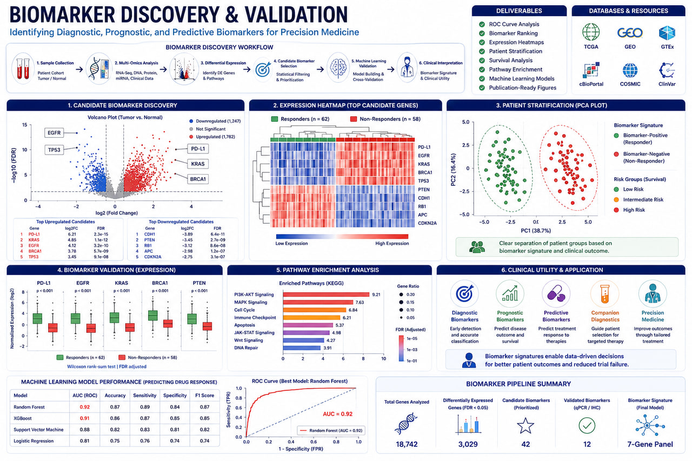

AI-Assisted Bioinformatics
Machine learning-enabled workflows for biomarker discovery, variant prioritization, and predictive genomics.
AI-Powered Biomarker Discovery Services for Precision Medicine, Drug Development & Translational Research

RASA Life Science Informatics provides advanced Biomarker Discovery services that leverage genomics, transcriptomics, epigenomics, proteomics, metabolomics, and clinical data to identify actionable molecular signatures associated with disease diagnosis, prognosis, therapeutic response, and patient stratification.
Biomarkers play a critical role in modern drug discovery, clinical research, precision medicine, and diagnostics. Our integrated bioinformatics workflows combine multi-omics analytics, machine learning, systems biology, and statistical modeling to uncover high-confidence biomarkers that accelerate therapeutic development and improve clinical decision-making.
We support pharmaceutical companies, biotechnology organizations, hospitals, CROs, research institutes, and academic laboratories through scalable, reproducible, and cloud-ready biomarker discovery pipelines.
Identify genetic variants and molecular signatures associated with disease risk and therapeutic response.
Discover gene expression signatures linked to disease progression and treatment outcomes.
Integrate multiple biological data layers for comprehensive biomarker identification.
Support translational research and precision medicine initiatives.
Leverage advanced computational models to identify predictive molecular signatures.
Patient stratification and personalized therapeutic decision-making.
Cancer biomarker identification for diagnosis, prognosis, and treatment response.
Biomarker-guided target identification and lead prioritization.
Molecular signature discovery and translational medicine applications.
Identification of disease-associated molecular markers.
Development of biomarkers supporting targeted therapies.
Identification of molecular markers associated with disease detection.
Prediction of disease progression and clinical outcomes.
Identification of treatment response and therapeutic efficacy markers.
Classification of patient populations for precision medicine.
Integrated molecular profiles associated with disease mechanisms.
Machine learning-enabled workflows for biomarker discovery, variant prioritization, and predictive genomics.
Support for Illumina, Oxford Nanopore, PacBio HiFi, and 10x Genomics platforms.
From raw sequencing data to biological interpretation and publication-ready reports.
Deployable on AWS, Google Cloud, HPC clusters, and secure on-premise environments.
Built using Nextflow, Snakemake, Docker, and Singularity for enterprise-grade bioinformatics operations.
Get in touch with our team in Pune, India to discuss sample sizes, platform details, and custom bioinformatics pipeline configurations for your research program.
Start a Project